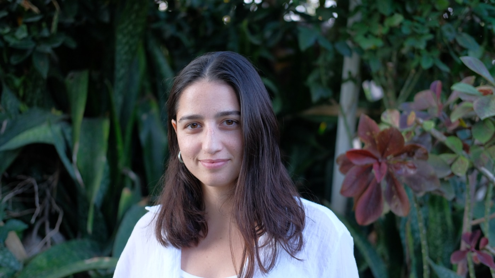

יובל דורון אבייב
נטורופתית מוסמכת, ארומתרפיסטית ומורה ליוגה. אני מלווה נשים בתהליכי החיים דרך טיפולים הוליסטיים, סדנאות ותנועה, בקליניקות בתל אביב ובעמק האלה.

את אדמורה — שילוב של המילים אדמה, אור ואהבה — הקמתי מתוך תשוקה להאיר את דרכם של אחרים אל הריפוי הטבעי.
המסע שלי החל בתקופת השירות הצבאי, כשאובחנתי עם מחלת קרוהן. קיבלתי את התווית המוכרת: "מחלה כרונית", יחד עם המרשם הקבוע לשיכוך כאבים. אך משהו בתוכי המשיך לשאול — האם יש דרך אחרת?
המסע לריפוי הוביל אותי לגלות את העוצמה שבשילוב בין משאבי הטבע, מסורות רפואה עתיקות, ובעיקר — אהבה עצמית ואמונה. למדתי להאט את קצב החיים ולהקשיב פנימה דרך טיפולי גוף-נפש, תרגולי נשימה, יוגה והתבוננות עמוקה.
כשהפסקתי להזדהות עם המחשבות המגבילות ונתתי לגופי את מה שהוא באמת צריך, גיליתי ריפוי שלא האמנתי שאפשרי עבורי. כפי שאמרה לואיז היי: "אין כל חוק המחייב אותנו להמשיך ולהאמין במשהו רק מפני שהאמנו בו בעבר".
היום אני מקדישה את חיי לליווי אחרים במסעם האישי לריפוי. אני מאמינה שכאשר מרחיבים את נקודת המבט, מגלים שהדרך לבריאות אינה שחור-לבן, ושהצעד הראשון תמיד מתחיל במודעות.
מזמינה אותך להתחיל יחד את המסע שלך.
מה למדתי
- 2024 — נטורופתיה (ארבע שנות לימוד), מכללת רידמן לרפואה משלימה
- 2024 — האטה יוגה (500 שעות), פראנה יוגה סנטר (שאקטי מאי)
- 2023 — צמחי מרפא ותזונה טבעית, מכללת רידמן לרפואה משלימה
- 2022 — רפלקסולוגיה, מכללת רידמן לרפואה משלימה · רייקי 1+2, רחלה ארומתרפיה
- 2021 — ארומתרפיה ופרחי באך, מכללת רידמן לרפואה משלימה
השנים — שנת קבלת התעודה.
מטופלות מספרות
״אני מרגישה טוב עם הדגשים התזונתיים שנתת לי. זה לא כבל אותי בתפריט משעמם. ירדה לי תדירות גלי החום, אני משתמשת בטיפות ונושמת וזה נותן תחושה ממש טובה.״
גלי · הגיעה עם גלי חום״אחרי חודשיים של ליווי ארומתרפי עם יובל, לא חשבתי אף פעם על טיפול מהסוג הזה והופתעתי לגלות כמה מועיל הוא היה ואיזה שינוי הוא עשה לי פיזית ופנימית גם בגוף וגם בחשיבה. הרגשתי שכל מוצר רקחת בהמון מחשבה, השקעה ואהבה. היה לך חשוב לדייק איתי את הטיפול ולהתאים לי את מה שאני מתחברת אליו וגם זה באמת עבד אחרי לא הרבה זמן! הרגשתי יותר יציבה, מאוזנת ורגועה. תודה!״
שרון · הגיעה לטיפול ארומתרפי״יובל הגיעה לחיי בטיימינג מושלם כשמשהו בתוכי אמר לי שכל התרופות והבדיקות הרפואיות לא בהכרח יעזרו לי כמו שהן. הרגשתי שאולי צריך לתגבר אותן בעולם המקביל לפיזי, העולם שבפנים. הצלחתי להכניס הרבה יותר רוגע וטוב לשגרה ואני משתדלת לתת מקום לאופציה הטבעית שעושה פלאים. היחס הכי אישי ואכפתי תודה!״
שקד · הגיעה לטיפול נטורופתי״ישנתי לילה רצוף פעם ראשונה אחרי הרבה מאוד זמן בזכות הטיפות שקיבלתי ממך. מודה לך״
רונה · הגיעה עם בעיות שינה״לא יודעת איך להודות לך, בחיי את לא מבינה מה זה עשה לי היום, אני בן אדם אחר, איזה עוצמות מטורפות!״
עדן · הגיעה לטיפול אנרגטי״היי יובל. רציתי להגיד לך שחל שיפור ממש מאז הטיפול ביום ראשון. העצירות עברה לי, מרגישה טוב יותר ומשוחררת יותר, ממש מאותו היום הכל התאזן!״
אלה · הגיעה לטיפול רפלקסולוגי״בשבוע אחד ראיתי שינוי מטורף באקנה שלי. הפנים נקיות והמוצרים מדהימים! בימים האחרונים פשוט לא יוצאים פצעים חדשים. אפילו בווסת לא יצא פצע אחד, זה בחיים לא קרה.״
לי · הגיעה לטיפול נטורופתי״אני חייבת לשתף אותך שאני מתמידה לקחת את פרחי הבאך כל יום 3 פעמים. מרגישה נינוחה ורגועה יותר, באנרגיות טובות יותר! אני בעבודה בלחץ פי מליון ועדיין מצליחה לשמור על רוגע יחסית אז תודה לך״
נועה · הגיעה לטיפול בסטרס״זה עבד כמו קסם! חודשים ניסיתי להיפטר מהקשקשים ואף שמפו לא עזר עד שקיבלתי את בקבוקון הקסם שלך. תוך שלושה שבועות הכל עבר. וגם השיער יותר נעים כל פעם אחרי שאני משתמש בשמן. תודה!״
אלון · הגיע לטיפול בקשקשים״רציתי להגיד לך שהמחזור שלי כל כך שונה ופחות נוראי מאז שיש לי את השמן שלך! אני בדרך כלל סובלת מאוד וזה כל כך עזר לי הפעם״
נעם · הגיעה לטיפול ארומתרפי״רציתי להגיד לך שתוך יומיים הידיים שלי השתפרו בטירוף! כל הנפיחות ירדה, האדמומיות נעלמה והיובש ממש משתפר. מזל שניסיתי קודם את קרם הידיים שלך ולא ישר שמתי את הקורטיזון.״
מאי · הגיעה לטיפול באטופיק דרמטיטיס״חייבת לעדכן אותך שהשתמשתי בלילות האחרונים בשמן שקיבלנו במתנה בסדנה שלך וההשפעה שלו ממש ניכרת. אני כבר תקופה ארוכה סובלת מחריקות שיניים בלילה ובימים האחרונים זה נעלם. מודה שהייתי סקפטית לגבי זה וממש שמחתי לגלות שטעיתי ושזה עוזר! תודה!״
נעמה · חריקת שיניים וארומתרפיה״אני מרגישה נורא לחוצה בגלל המבחן הבא ואחרי המקלחת שמתי את שמן הגוף והדלקתי מבער עם השמנים שרקחת לי. זה ממש משפר לי את ההרגשה״
שי · הגיעה עם חרדת מבחנים